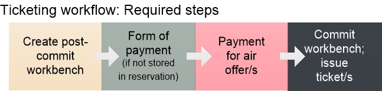
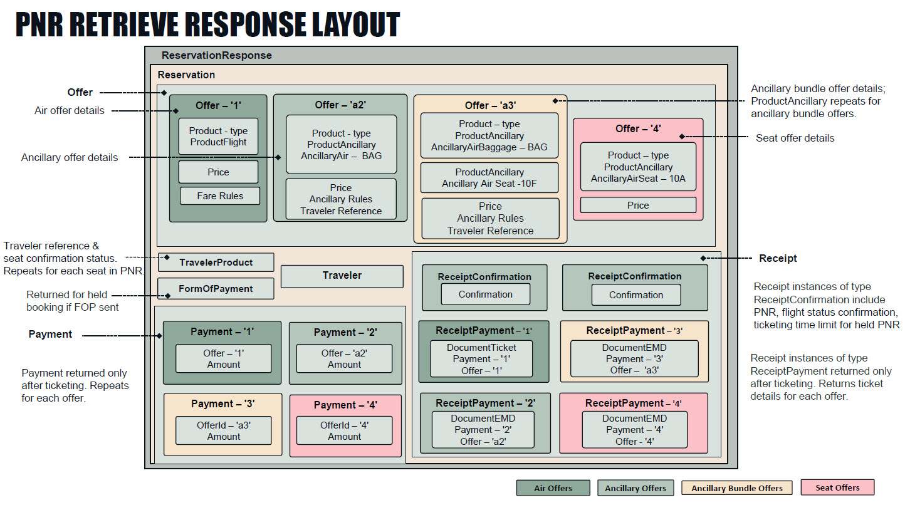

Ticketing Guide
Ticketing in the JSON APIs uses a workflow to ticket an existing reservation. At a minimum you must:
-
Create a workbench.
-
If a form of payment isn't already stored with the booking (can be sent in the booking workbench for GDS only), send form of payment details.
-
Send payment for the offer/s to be ticketed.
-
Commit the workbench.
The difference between ticketing and booking is that payment is sent in the ticketing workbench. At workbench commit, that payment is applied and ticket/s issued. In other words, if a workbench includes payment (not only form of payment), a ticket is issued.
This guide summarizes the required and optional steps in the ticketing workflow. Endpoints, requests, responses, and examples are provided in the API Reference for each step, linked below.
Additional options:
- You can verify booking details prior to ticketing with a Reservation Retrieve.
- You can add certain remarks and service requests to the reservation before ticketing.
Some steps in the workflow are optional, or specific to either GDS or NDC, or can instead take place in the booking workflow. See All Booking and Ticketing Workflows for all possible options.
The process to exchange tickets is detailed in the Exchange, Refund, and Void Guide.
Ticketless carriers do not have a ticketing step.
Any workbench is valid for 30 minutes and must be committed within that time window or it expires.
Related Content: JSON Air APIs Guide, Booking Guide, Ancillary and EMD Guide; Exchange, Refund, and Void Guide
In this guide:
- Basic Concepts
- Ticketing Workflow Summary
- Ticketing Workflow Diagram
- Ticketing Commit Response Layout Diagram
- Optional Actions at Commit
- Retrieving and Listing Tickets
Basic Concepts
A ticket is an itinerary receipt issued for each passenger in the itinerary, including infants without a seat, when payment is sent as part of the workflow. Tickets are issued for air offers (i.e., flight/s) while EMDs are issued for paid ancillary and paid seat offers, which are identified by the ticket type code J or Y. EMD stands for electronic miscellaneous document; see the Ancillaries and EMD Guide. Every ticket has a 13-digit code that includes the airline's 3-digit ticketing code, 4-digit form number, and 6-digit serial number.
For GDS content, tickets are issued by the Travelport host system, while tickets for NDC content are issued directly from the airline. Because of this, you'll notice some differences in how ticketing and related functions are handled in the JSON APIs. These differences are noted here in the help.
Usually, a ticket is issued for a held booking, which is a reservation created in a previous workbench session with the booking workflow. The exception is that the Instant Pay workflow, supported only for NDC, allows booking and ticketing in the same workbench session.
The step that sets ticketing apart from booking is that a payment is made, and on commit that payment is applied and ticket/s issued. The Add Payment request specifies one or more offers to pay for. The offer/s can be for flight/s, paid seats, or other paid ancillaries.
Add Payment must reference both the offer being paid for and the form of payment (FOP)to be used to pay for that offer. FOP can be added during booking for GDS and stored with the reservation, or in the ticketing workbench for both GDS and NDC. If Add Form of Payment is added for NDC and Add Payment is not sent in the same workbench, the FOP information is not retained and must be sent again at ticketing.
Ticketing uses a workflow of multiple calls to ticket a booking:
-
Create a post-commit workbench.
-
Add form of payment (FOP) if not already part of the booking.
-
Add payment.
-
Commit the workbench.
This last step, the workbench commit, finalizes all the actions taken in the workbench and sends that information to the carrier. It offers several Optional Actions that affect what happens at commit. For example, you can use a workbench commit to accept airline-initiated schedule changes, route the booking to an internal queue at your company, create retention segments, or apply options for exchange ticketing.
The same ticketing process applies when exchanging tickets for GDS, summarized below. An exchangeis when a modification is made to the air itinerary on a ticketed reservation, such as a change to a departure date or the cabin class. Exchange Ticketing for GDS, discussed below, uses the same Workbench Commit API as initial ticketing. The NDC exchange process is similar, but uses the Modify API to commit changes instead of the Workbench Commit API. See the Exchange, Refund, and Void Guide for more about exchanges for both GDS and NDC.
After ticketing, you can retrieve ticket details with any of the following requests:
-
Reservation Retrieve: Lists itinerary, offer, and price details for all travelers on a reservation. If the reservation has been ticketed, returns ticket number/s in the Document/Number object.
-
Ticket Retrieve: For the single ticket number sent in the request, returns basic itinerary, price, and ticketing details such as fare, passenger name, flight origin and destination, and ticketed date.
-
Ticket List: Returns a list of all ticket numbers on a reservation. Does not return ticket details.
Ticketing Workflow Summary
The ticketing workflow uses the following HTTP requests summarized in the following table and detailed below.
| Step # |
Booking Workflow Step |
Description and Notes |
API Reference |
|---|---|---|---|
|
1 |
Post-Commit Workbench |
Initiate a workbench for an existing booking by sending the reservation locator code in the POST request. |
|
|
optional |
Add seats |
The ticketing workflow supports seat maps and booking per the Seats Guide. |
|
|
optional |
Add ancillaries |
The ticketing workflow supports certain paid ancillaries per the Ancillaries Guide. |
|
|
optional |
Add comments and service requests |
The ticketing workflow supports remarks and service requests. |
|
|
2 |
Add form of payment if not already present
|
Add details about the form of payment (FOP) to be used for payment. The response returns a system-generated identifier for the FOP that is part of the reservation record and sent in the subsequent Add Payment request. For GDS, sending FOP in booking is optional and, if sent, is stored and retrieved during ticketing. If not sent in booking, FOP is required at ticketing. NDC does not support adding FOP during booking; it must be added at ticketing. Add Multiple Forms of Payment (GDS only) For GDS only, you can add up to two FOP in either the booking or ticketing workflow by sending a Form of Payment request for each FOP. At ticketing you must send a separate Add Payment request for each FOP. The additional FOP can be any supported form of payment. Multiple FOP are supported only for bookings with a single passenger. Unused Ticket as Form of Payment (NDC only) For NDC only, on carrier American Airlines (AA) only, the JSON APIs support using an unused ticket as form of payment (FOP) for ticketing a held booking. To do so, send the Ticket as FOP request before the Add FOP request. |
|
|
3 |
Add payment |
The Add Payment step links an FOP to one or more offer/s to pay for. Offers can be for flight/s, paid seats, and/or paid ancillaries. You can send multiple offer IDs in one request, such as one offer ID for the flights and additional offer IDs for paid seats. To ticket, at a minimum you must send payment for the flight offer/s. Carrier requirements vary for when payment must be made for ancillaries or paid seats. See the Ancillary and EMD Guide. If multiple forms of payment have been added (GDS only), send one Add Payment request for each FOP. Add Payment supports only one FOP. Returns a confirmation identifier. |
|
|
4 |
Commit the workbench and issue ticket |
Final step in the ticketing workflow. Issues the ticket (and EMD if applicable), discards the workbench, and returns a ticket number. The workbench commit includes several optional actions; see Workbench Commit for details. |
Workbench Commit API Reference
|
Ticketing Workflow Diagram
The following workflow diagram includes optional actions supported in the ticketing workbench such as adding seats and ancillaries. See the Seats and Ancillaries guides.
To ticket an itinerary, at a minimum you must send payment for the offer for the flight/s. Carrier requirements vary for when to add payment for any ancillaries or paid seats. See the Ancillary and EMD Guide .
Each box in the diagram represents one API call in the workflow.

Workbench Commit Response Layout Diagram
The following diagram illustrates the general structure of the workbench commit response for ticketing, which is the same as the Reservation Retrieve request and response. Note this diagram includes the Payment object, which is returned only after ticketing.

Optional Actions at Ticketing Workbench Commit
Although the workbench commit step at the end of the ticketing process does not require a message payload, AirReservation supports the following payloads to carry out the following optional actions at commit. These payloads are detailed in the Workbench Commit API Reference.
Accept Involuntary Schedule Change
The indicator scheduleChangeAcceptedInd allows you to update the reservation with schedule changes when an airline has modified a flight schedule (called an involuntary schedule change). To check whether a flight schedule has been modified, send a standard Reservation Retrieve request:
-
For GDS, a value in OfferStatus/StatusAir/code of either TK or UN indicates the flight has schedule change information.
-
For NDC, the response returns NDC CONTENT HAS CHANGED in ReservationComment when a schedule change has occurred.
To accept the schedule change, send the workbench commit request with scheduleChangeAcceptedInd set to true. You do not need to create a workbench session first.
Specify a Queue
Queues provide the ability to place a booking into an area that allows you to manage, sort, and store booking files, messages from vendors, and manage workflow. Queue management distributes messages from vendors and customers to the specified queues for action.
Each Travelport PCC has a set of numbered queues. Some of these queues have predetermined functions and others can be customized for internal use. The queue system allows you to sign into and out of queues, place booking files on a queue, and perform various maintenance functions on the booking files currently on queue.
To specify a queue for a booking, send a message payload with the QueueNumber object in the workbench commit request.
Alternatively, you can place bookings on a queue with the Queue Placement API. Additional APIs allow you to retrieve a list of bookings on a queue and to remove bookings from a queue.
Add Ticket to Back Office Systems
Sending the optional Issuance query parameter with a value of BACKOFFICE in the workbench commit request sends a message to update any back office accounting systems with ticket information.
You can send the message before the ticket is issued by sending a commit without payment, or commit with payment and the Issuance parameter to issue the ticket and send the message. The response includes an interface control number.
Retrieving and Listing Tickets
The JSON Air APIs provide the following APIs to retrieve bookings and tickets:
-
To retrieve all booking details, use Reservation Retrieve. Returns all booking, payment, and ticketing information currently on a booking,
-
To retrieve a list of all ticket numbers on a booking, use Ticket List.
-
To retrieve details for all tickets associated with a booking (GDS only), or for a single ticket for NDC, use Ticket Retrieve.
-
To return a list of documents on a booking, such as tickets, invoices, MCOs, and EMDs, use Document List.
-
To return histories of up to six documents on a booking, such as tickets, invoices, MCOs, and EMDs, use Document History.